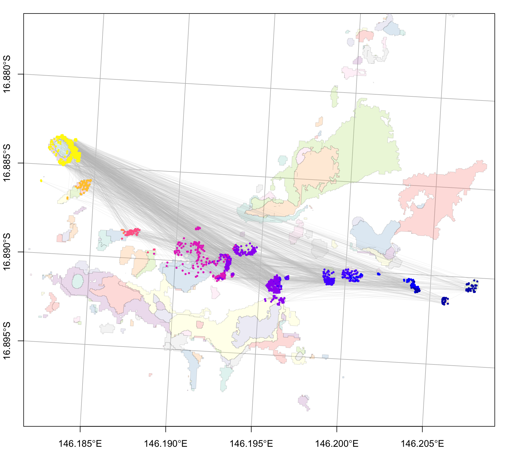

Moore Reef (cGBR oceanparcels)
Simulated reseeding event at Moore Reef, northern Great Barrier Reef based on ocean parcels input
1) seed particles
#library(coralseed)
library(ggplot2)
library(tidyverse)
library(sf)
library(tmap)
# load seascape
moore_benthic_map <- system.file("extdata", "Moore_Benthic.geojson", package = "coralseed") |>
st_read(quiet=TRUE)
moore_reef_map <- system.file("extdata", "Moore_Geomorphic.geojson", package = "coralseed") |>
st_read(quiet=TRUE)
moore_seascape <- seascape_probability(reefoutline=moore_reef_map, habitat=moore_benthic_map)
# load particles - import example zarr (oceanparcels output)
{zip_path <- system.file("extdata", "Moore_reseed.zip", package = "coralseed", mustWork = TRUE)
out_dir <- file.path(tempdir(), "coralseed_Moore_reseed")
unlink(out_dir, recursive = TRUE, force = TRUE)
dir.create(out_dir, recursive = TRUE)
utils::unzip(zip_path, exdir = out_dir)}
moorereef_particles <- import_zarr(file.path(out_dir, "output.zarr"))
# run seed particles
moore_particles <- seed_particles(moorereef_particles,
set.centre = TRUE,
seascape = moore_seascape,
probability = "additive",
limit_time = 7,
competency.function = "exponential",
crs = 20353,
simulate.mortality = "typeII",
simulate.mortality.n = 0.1,
return.plot = TRUE,
return.summary = TRUE,
silent = FALSE)2) settle particles
moore_settlers <- settle_particles(moore_particles,
probability = "additive",
silent = TRUE)
plot_particles(moore_settlers$points, moore_seascape)
moore_settlement_density <- settlement_density(moore_settlers$points, cellsize=50)3) map coralseed
map_coralseed(seed_particles_input = moore_particles,
settle_particles_input = moore_settlers,
settlement_density_input = moore_settlement_density,
seascape_probability = moore_seascape,
restoration.plot = c(100,100),
show.footprint = TRUE,
show.tracks = TRUE,
subsample = 1000,
webGL = TRUE)4) coralseed outputs
library(networkD3)
flowchart_coralseed(seed_particles_input = moore_particles,
settle_particles_input = moore_settlers,
multiplier = 10000,
postsettlement = 0.8)